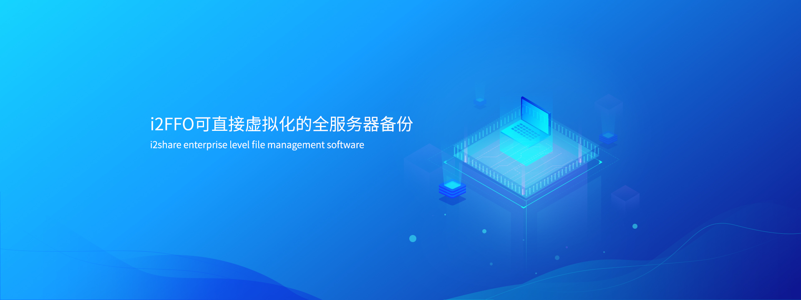

产品概述
i2FFO（Full Server Failover）全服务器备份软件，可以在 Linux/ Windows 操作系统下将整个系统备份为一个虚拟机文件，在发生故障时在备端快速进行系统恢复。适用于整个服务器系统的备份、不停机迁移、升级前的数据保护等场景。
产品特点
简单高效，无备份时间窗口
无需共享存储，实现任意距离的实施及维护，无须再配置目标机上的应用，支持直接虚拟化的备份，备份数据可直接在 VMware平台拉起，没有恢复时间窗口，减少 RTO 业务恢复时间。针对全服务器进行的备份，支持多对一备份；在生产系统发生故障时，可分别进行恢复。
良好的平台兼容性
支持异构硬件下的数据备份，备份数据可恢复至任意平台，包括但不限于 AWS、Azure、华为、H3CVMware 等物理及云平
无需停机不影响业务运行
备份过程不停机支持在线热备份，即备份过程中源端服务器应用无需停止。在图形化界面对整个备份过程进行监控。
带宽占用少，数据安全性高
支持备份过程对数据进行压缩和加密，多个等级的压缩节省带宽消耗，同时支持用户自定义选择源端备份的目录、或排除指定目录。
应用场景
全服务器数据恢复
全服务器数据备份
兼容性列表
B/S 架构 , 客户端支持主流浏览器，如 IE、FireFox，谷歌等
源端和目标端支持主流的云平台，包括但 限于 AWS，Azure，华为 FusionSphere，H3C，VmWare，物理机，私有云、公有云平台等
源端和目标平台支持公有云，物理服务器
支持主流的 Linux/Windows OS
软件与平台松耦合，能适用公有云各版本，云平台的版本升级不影响工具兼容性